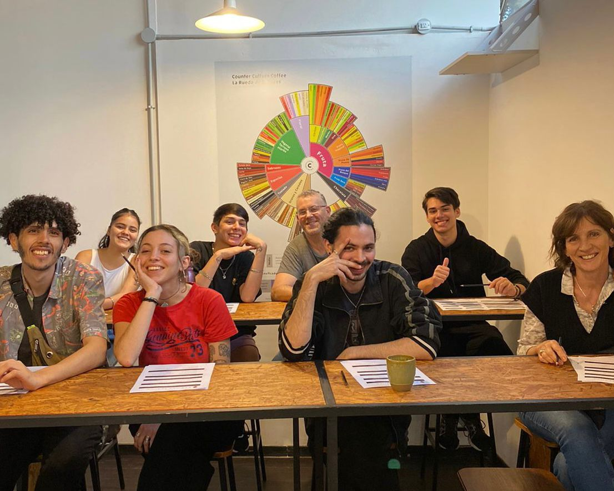

La Escuela de Cafetería de Baristas con Alma forma parte de la Fundación almahumana,
desde la Escuela brindamos capacitaciones gratuitas a 6 institutos, centros de día, hogares
y asociaciones que se dedican a la inserción laboral para personas con discapacidad, y
gran parte de las ganancias de la escuela están destinadas al funcionamiento de estos
proyectos.
+ Los instructores:
El equipo académico de Baristas con Alma son profesionales dentro del mundo del café
que crearon las herramientas didacticas y educativas para poder generar un espacio de
aprendizaje rico para que desde el interés personal o profesional puedas desarrollar tu
amor por el café.

>
+ Objetivos educativos:
Aprender las bases de la cafetería
Iniciar el desarrollo sensorial en el mundo del café
Comprender el trabajo de un Barista
Desenvolverse en una cafetería de manera profesional
Poder aplicar los conocimientos en el servicio de manera óptima
+ Beneficios académicos:
El puesto de "barista" se encuentra altamente demandado por el mundo gastronómico, cada vez
más espacios que no tienen relación con la gastronomía deciden abrir como lobby o recepción
pequeñas cafeterías de especialidad, y es necesario poder contar con una buena base de
conocimiento para poder comenzar como Barista, no solo realizando un curso, sino
perfeccionandose sistemáticamente. Este curso está diseñado de manera evolutiva, para que
puedas adquirir los conocimientos paulatinamente mientras vas poniendolos en práctica clase tras
clase.